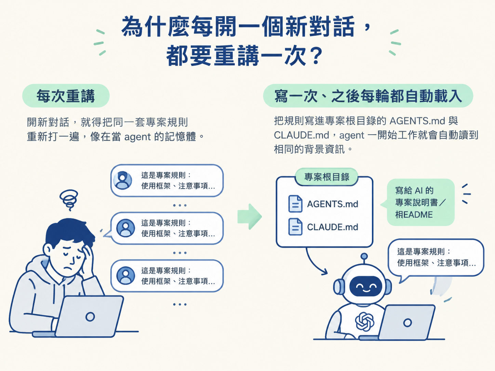
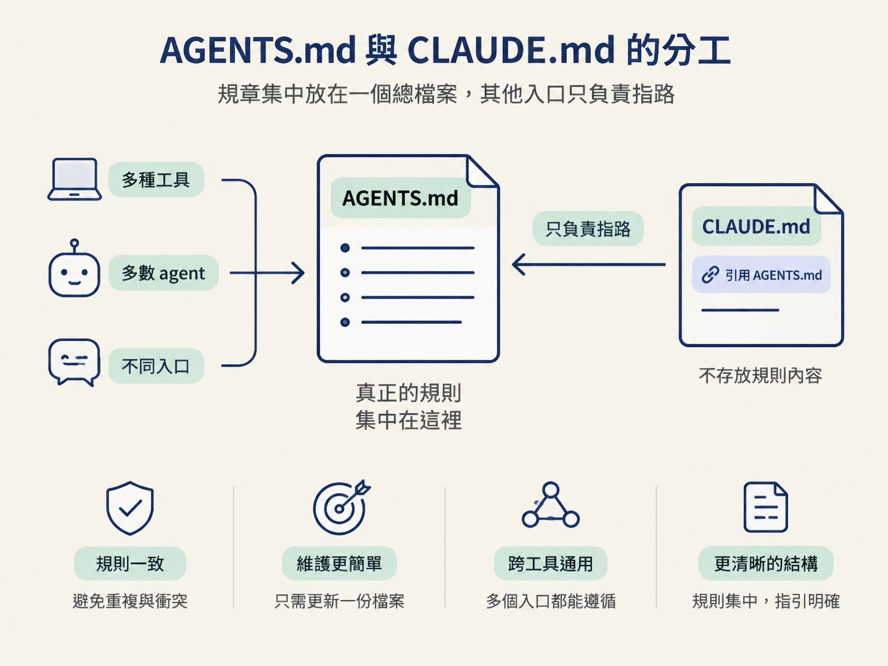
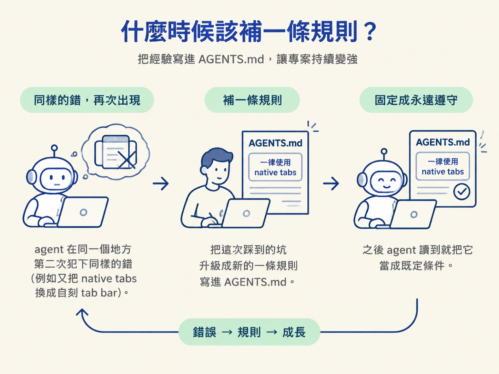

上一節的建造迴圈要跑得順，前提是 agent 每次動手前都記得這個專案的規矩。但現實往往不是這樣：你昨天才交代「用 Expo 的 native tabs，不要自己刻 tab bar」，今天開一個新對話，它又照自己的習慣刻了一組。
如果每天都要把同樣的規則重新打一遍，你就不是在使用工具，而是在當它的記憶體。這正是 AGENTS.md 與 CLAUDE.md 要解決的問題：把專案規矩放進 repo，讓 agent 每次開始工作時都能先讀到。
你可以把它們想成「寫給 AI 的 README」。人類新進同事報到時，需要一份專案導覽，知道這個專案使用什麼框架、有哪些不能踩的線，以及程式碼應該怎麼放。AGENTS.md 和 CLAUDE.md 做的事情類似，只是讀者換成了 agent。

完成這一節後，你應該能分辨 AGENTS.md 與 CLAUDE.md 的角色與分工，也能判斷什麼規則值得寫進去，以及什麼時候該補上一條新規則。
AGENTS.md 和 CLAUDE.md 都是放在專案根目錄的純 Markdown 檔案。它們的特點是：不用你每次提醒，agent 在收到第一句指令之前，就會先把這些檔案讀進上下文。
換句話說，agent 一開始就知道這些規則，不必等你在對話裡提醒。你寫一次，之後每一輪工作都能沿用同一份背景資訊。
而且它們放在版控裡。換一台電腦、換一個 agent，甚至換一位同事，專案規則都還跟著 repo 留在原地，不會只躺在某個人的聊天紀錄裡。
兩者的內容格式完全一樣，差別在於「誰會讀它」。CLAUDE.md 主要是 Claude 系列使用的專屬檔案，Codex、Cursor 等其他 agent 不一定會讀；AGENTS.md 則偏向跨工具，多數現代 agent 都認得這個檔名。
因此，課程裡採用的慣例是：把真正的規則全部寫進 AGENTS.md，再讓 CLAUDE.md 只留一行去引用它。這就像把規章集中放在一個總檔案裡，其他入口只負責指路，避免兩邊各自存一份、最後內容互相打架。

| 檔案 | 誰會讀 | 建議放什麼 |
|---|---|---|
AGENTS.md | 跨工具，多數 agent 都認 | 真正的規則與慣例，全部寫這裡 |
CLAUDE.md | 主要是 Claude 系列 | 只留一行引用 AGENTS.md，避免兩份規則不一致 |
如果同一條規則同時寫在兩份檔案裡，問題通常不會立刻出現。真正麻煩的是某天你改了其中一邊，卻忘了同步另一邊。接著，不同 agent 可能做出不同的行為，而你只會覺得它們「怎麼又不聽話」。單一來源能把這種歧異先擋在門外。
AGENTS.md 最實用的內容，是專案的「慣例」與「永遠／絕不」這類硬規則。它不必把每個功能的實作步驟寫成教科書，只要告訴 agent：在這個 repo 裡，哪些選擇已經定案，哪些界線不能跨過。
課程使用的真實專案裡，AGENTS.md 大概長這樣：
Expo 已經改版了。 動手寫任何程式碼之前，先讀版本對應的官方文件（例如docs.expo.dev/versions/v57.0.0/）。
Convex 規則。 處理 Convex 相關程式時，一律先讀convex/_generated/ai/guidelines.md；那份文件裡的規則，優先於你從訓練資料學到的舊知識。要安裝官方 skill 可以跑npx convex ai-files install。
導覽偏好。 底部導覽一律使用 Expo Router 的 native tabs，包含設計預覽；不要用自刻的 tab bar 取代它，也不要為了對齊參考圖而把它藏起來。
這三段分別示範了三種值得固定下來的規則。
第一種，是提醒 agent 舊知識可能已經過時，必須先查目前版本的官方文件。第二種，是把 agent 導向專案內更細的規則檔，讓它不要只依賴訓練資料裡的一般知識。第三種，則是把團隊已經做出的技術選擇寫死，例如底部導覽一律採用 native tabs。
它們的共同點是：這些規則講的都是「在這個專案裡你必須遵守什麼」，而不是每次的實作步驟。
規則不必在專案第一天就一次寫完。最常見的觸發時機，是 agent 在同一個地方犯了兩次同樣的錯。
課程裡就發生過這種情況：agent 修改畫面時，把 native tabs 換成自刻的 tab bar，破壞了先前已經完成的效果。與其每次重新提醒，作者直接把「一律使用 native tabs」寫進 AGENTS.md。之後 agent 再讀專案說明書時，就會把這條規則當成既定條件。
所以，AGENTS.md 是一份會跟著專案成長的活文件。你可以把「這次踩到的坑」升級成「之後永遠遵守的規則」。當同一種錯誤一再出現，補規則通常比重複提醒更可靠；這種把經驗固定下來的能力，也是繼續往下學 skill 的地基。

AGENTS.md 與 CLAUDE.md 解決的是 agent 的「起點」問題：它一開始就知道這個專案有哪些慣例、哪些技術選擇不能隨意更換。
但知道規則，還不代表已經做對。規則管的是「不能做什麼」，下一個問題是：agent 要怎麼確認自己做出來的東西真的符合目標？下一節會回到建造迴圈裡的 self-check，利用截圖比對，讓畫面一步步逼近設計稿。
AGENTS.md 與 CLAUDE.md 都是放在專案裡、session 開始就自動載入的純文字說明書。慣例是：規則全部寫在跨工具的 AGENTS.md，CLAUDE.md 只留一行引用它。內容以「慣例」和「永遠／絕不」為主，例如提醒 agent 去讀版本對應的官方文件、把技術選擇寫死。當 agent 重複犯同一個錯，就是該補一條規則的時候。